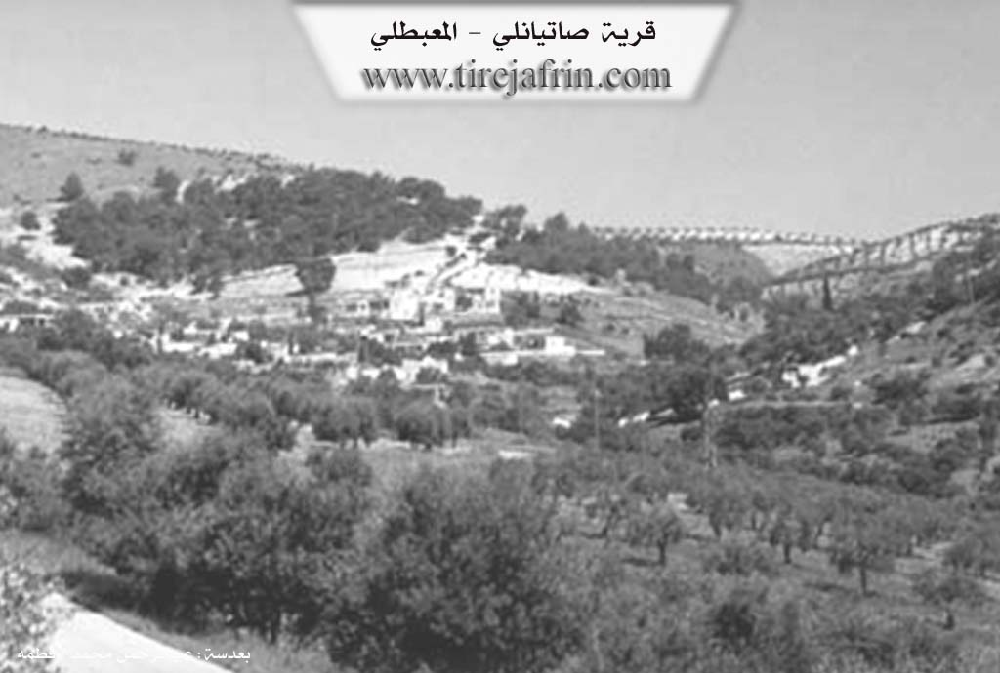

General Information
Nahiya (Subdistrict)
Mabeta
Also Known As
Al-Atiya, Sati, Satiranli, Satiya, العطية, صاتي, صاتيان, صاتيانلي
Families, Clans, etc.
Berîmo, Ebdo, Elkûre, Qere Col, Sîdo
Photos


Basic Information about Satiya
Source: Tirej Afrin
Etymology: Named Satiya, which is the name of a Kurdish tribe found in Hekarî. Some sources suggest a Turkish origin meaning 'selling' due to an ancient market at the site.
Foundation Date/Period: Approximately 400 years
Caves: Ancient dwelling caves
Hills: Şiwte, Çiyayê Kurmênc
Ruins: Ancient foundations, Bath, Oven, Destroyed cemetery
Other Landmarks: Geliyê Sîlê
Summaries
I. Summary from TirejAfrin Site (English) of Satiya
Source: https://www.tirejafrin.com/site/kura%20afrin%20%20%20mebetli%20-%20satiya.htm
In the book Çiyayê Kurmênc (Efrîn): A Geographical Study by Dr. Mihemed Ebdo Elî: Satiya, Satiyanlî, Satî, El-Etiye. Population: 981. Altitude: 580m.
Satiya: The name of a Kurdish tribe found in Hekarî (Lerkh, p. 46). Some say that the name is of Turkish origin meaning "selling," because there was an ancient market for buying and selling at the site of the village during the days of the Greeks? El-Etiye: An inaccurate translation of the Turkish designation.
This small village is located on the lower southern end of the steep Şiwte highland. The houses of the village are attached to one another, forming an amphitheater shape. Foundations of archaeological buildings appear at its site, and traces of a bath, an oven, and other archaeological structures have been found. About 2 km south of the village, there is an area of ancient ruins consisting of caves worked in a manner suitable for habitation; it appears they were dwellings in ancient times. Next to those caves is a destroyed cemetery.
In the book Efrîn... Her River and Her Green Hills by the writer Ebdulrehman Mihemed from the village of Qetme: Satiyanlî is a village in Çiyayê Kurmênc, following the Mabeta district, Efrîn region, Heleb governorate.
It is a small village located in the north-central part of the mentioned mountain, on both sides of a valley that penetrates it from the northwest toward the southeast. It is 12 km southeast of the town of Mabeta. Its soil is clay. It is bordered to the north by high mountain highlands planted with olive and forest trees and the village of Îkî Axûr; to the south by Geliyê Sîlê, mountain highlands, and the villages of Gawirkan and Xalta; to the west by high mountain highlands planted with olive and forest trees and the village of Rutanlî; and to the east by high mountain highlands planted with olive trees and the village of Kefer Delê Jorîn.
The number of its houses is about 40, and its age is about 400 years. Its old houses are made of stone and mud with flat wooden roofs, around which modern cement construction has spread, especially from the north and west sides. The village is divided into a western and eastern section due to a valley passing through its center. A primary school is available. The village drinks from cisterns where rainwater is collected in winter. It is connected to the district center and neighboring villages by a paved road passing through its center up to the Mabeta district and the villages of the Cindirês district.
Its residents work in rain-fed agriculture (olives, grains, vines, legumes) alongside raising sheep and goats. Among the families present in the village are: Qere Col family, Sîdo family, Elkûre family, Ebdo (Zêno) family, and Berîmo (Ebdike) family.
It is mentioned that Mr. Nûrî Berîmo and the children of the late Xelîl Hesen Sîdo, who had a role in reviving the honoring ceremonies of the annual Tirej Efrîn website shield and their love for serving the Efrîn region, are sons of this village. Among the holders of higher degrees in the village: Mehmûd Berîmo (PhD in Agriculture, Germany).
Village Mukhtar: Neşet Hebeş.
Sources
Book: جبل الكرد (عفرين) دراسة جغرافية Çiyayê Kurmênc (Efrîn): A Geographical Study by د. محمد عبدو علي Dr. Mihemed Ebdo Elî.
Book: عفرين .... نهرها وروابيها الخضراء Efrîn... Her River and Her Green Hills by عبدالرحمن محمد Ebdulrehman Mihemed from the village of Qetme.
Preparation and execution: Ebdulrehman Hacî Osman (Director of Tirej Efrîn website).
Date: 20/12/2013
Foundation/Origin Information of Satiya
No information provided in this source.
Source: TirejAfrin Site
Possible Village Name Meaning of Satiya
Satiya is the name of a Kurdish tribe that exists in Hakkari. Some say that the name is of Turkish origin meaning "sale", because there were ancient markets for buying and selling at the village site during the Greek days. Al-Atiya is an inaccurate translation of the Turkish naming.
Source: TirejAfrin Site